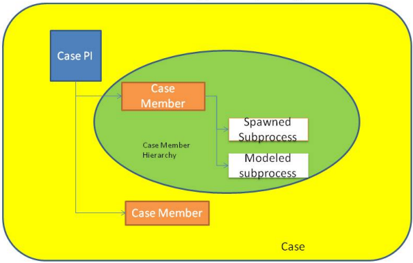

A case is a special kind of a process instance. It allows to group arbitrary active process instances under a new top-level and non-designed super-process instance called as a case process instance.
The case exists of a root process instance called as the case process instance and an activity instance is called as the case activity instance.
A case consists of case process instances. Each case process instance has case members. These case members are root processes. The root processes can be from any model. Each root process can have subprocesses and spawned processes. If you abort case members, the case process instance gets completed. Similarly, if you complete all the case members, the state of the case process instance gets completed.

Figure: Case Structure
The case life-cycle differs from non-case process instance life-cycle:
The case process instance is a process instance that is based on a technical process definition. The technical process definition is a part of technical model. The case process instance is represented using the icon. The case process definition has following properties:
The starting user of the case process instance is called as the Case Originator.
Following operations are not allowed on a case process instance.
The case process instances and their subprocesses have private data scopes. No data is copied or shared between them.
The case activity instance is an activity instance that is based on a technical activity definition. The activity definition is a part of the case process definition. It has the following properties:
Following operations are not allowed on a case activity instance:
Please note that the case activities do not appear in assembly line mode.
The activity instance is created at the time of case creation and its state is strongly coupled to the state of the process instance.
State change is initiated internally only
Every case has an owner and the case owner controls the access to case related operations.
The current performer of the case activity instance is at the same time the owner of the case. The owner of a case can explicitly be changed using the Delegate Case functionality.
Initially owner of a case is the originator of case. The owner of a case can be any of the following:
A case has the ability to store descriptors and its values dynamically per process instance. In the Stardust Portal, this is used to compute descriptors of a case based on matching descriptor value of a case member. The data paths resulting to Primitive Java Objects are allowed for case descriptors.
A sub-process of a case process instance differs in its sub-process characteristics from spawned subprocess.
| Is Sub-process of Case Process Instance |
Sub-process Instance Must Be Completed To Complete Case Process Instance |
Abort Of Case Process Instance Results In Abort Of Sub-process Instance |
Abort Of Sub-process Instance Results In Abort Of CaseProcess Instance |
Interrupted Subprocess: Recovery Case PI recovers Case Subprocess |
|
|---|---|---|---|---|---|
| Sub-process of Case Process | Supported | Supported | Not Valid | No, the case sub-process is not coupled with respect to abort-root functionality to its surrounding case. | Supported |
A PredefinedModel or technical model is a system defined model. It is named as PredefinedModel. This PredefinedModel gets deployed automatically at the time of first deployment operation of any other model. Note that you cannot modify, deploy and delete this model. It contains:
It also contains two participants:
Also refer to the section, PredefinedModel in Deployment Dialog of the Deploying a Workflow Model chapter in the Modeling Guide.
Also refer to section Predefined Model of chapter Viewing Details on Deployed Models in the End User Handbook.
The case process is a default process definition for starting cases. As soon as you create a case, default case process and default case activity gets created.
The case activity is the default activity instance for a case.
A technical model that is a PredefinedModel contains a default case activity of the default case process definition. The default performer of this activity is the case performer. The case performer participant gets a special treatment with regards to permissions. Technically it is defined as an Organization and has special runtime code to determine if a user or participant is allowed to perform the DefaultCaseActivity. Note that the case performer is not displayed in the Participant Management Tree of any model.